6Resource Curse Theory: Natural Resources and Democracy
In this chapter, we continue with analyzing the World in 2010 dataset. We have already downloaded it and placed it in our respective data folder. In case you need to download it again, it is available on Blackboard. It can also be downloaded from here. A codebook is also available on Blackboard.
Let’s get ready by clearing the environment, calling for the R packages we are going to use, and loading the dataset.
# Preliminaries #### # clear the environmentrm(list =ls())# call the packageslibrary(tidyverse)
── Attaching core tidyverse packages ──────────────────────── tidyverse 2.0.0 ──
✔ dplyr 1.1.4 ✔ readr 2.1.5
✔ forcats 1.0.0 ✔ stringr 1.5.1
✔ ggplot2 3.5.1 ✔ tibble 3.2.1
✔ lubridate 1.9.3 ✔ tidyr 1.3.1
✔ purrr 1.0.2
── Conflicts ────────────────────────────────────────── tidyverse_conflicts() ──
✖ dplyr::filter() masks stats::filter()
✖ dplyr::lag() masks stats::lag()
ℹ Use the conflicted package (<http://conflicted.r-lib.org/>) to force all conflicts to become errors
# load the datadf <-read.csv("data/world_in_2010.csv")
Recall the resource curse theory which proposes that natural resources are often a ‘curse’, obstructing democracy, impeding political and economic development, and leading to internal armed conflict. We are going to analyze data to see if there is a relationship between natural resources and such adverse outcomes.
We are going to start by exploring the relationship between natural resources and democracy.
\[ Natural \; resources \rightarrow No \; democracy \]
The first two variables we are interested in are as follows:
Democracy score: v2x_polyarchy
Natural resources as the share of the GDP: Natural_resources_rents_perc_of_GDP
The first variable, v2x_polyarchy, is the V-Dem’s Electoral Democracy Index, which measures the level of electoral democracy in a country in a given year (2010 in this case). It is a value between 0 and 1, where the higher the index score, the more democratic a country is. This is our outcome variable.
The second variable, Natural_resources_rents_perc_of_GDP, is the explanatory variable, measuring the share of contributions by natural resources to the GDP.
Our first goal is to create a cross tabulation where we can see the proportion of democracies in major natural resource producing countries. We will compare this figure to the proportion of democracies in countries that are not major natural resource producers.
We should start by exploring our variables of interest one by one. We are going to carry out a series of univariate analyses.
6.1 Measuring democracy: v2x_polyarchy
Let’s explore the data with a quick summary().
# summary of the polyarchy variable summary(df$v2x_polyarchy)
Min. 1st Qu. Median Mean 3rd Qu. Max.
0.0200 0.3400 0.5600 0.5468 0.7800 0.9300
In line with the description in the codebook, the values of v2x_polyarchy are between 0 and 1 (more precisely, the minimum is 0.02 and the maximum is 0.93). There are no missing values. It is apparent that v2x_polyarchy is a continuous numerical variable.
We can create a histogram to visually summarize the variable.
# Histogram of polyarchyhist(df$v2x_polyarchy,breaks =seq(0, 1, 0.1),main ="Histogram of V-Dem Polyarchy Index", xlab ="Level of democracy (Polyarchy Index)", ylab ="Frequency" )
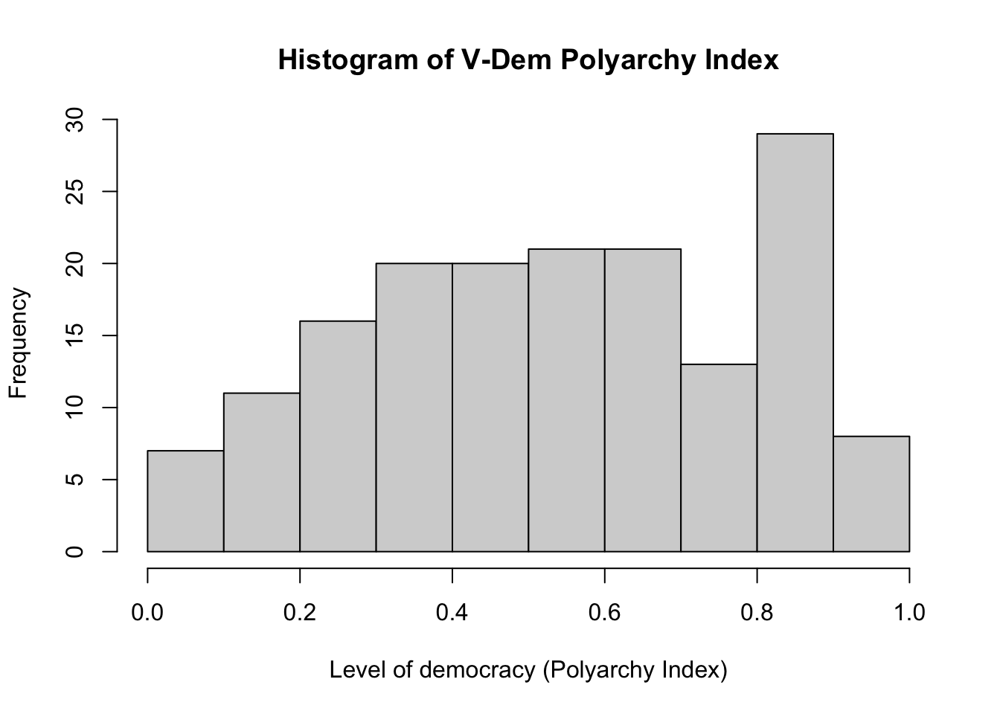
We can also create a boxplot.
# A box plotboxplot(df$v2x_polyarchy, main ="Distribution of V-Dem Polyarchy Index", ylab ="Level of democracy (Polyarchy Index)",ylim =c(0,1) # y-axis should span from 0 to 1 )
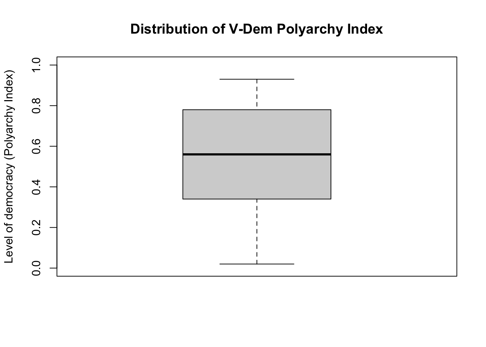
We should also quickly look at the most and the least democratic countries. We have already learned how to do this in base R, but let’s see another way using tidyverse.
# Least Democratic (most authoritarian) 10 countriesdf |>select(Country_Name, v2x_polyarchy) |># selects only two variablesarrange(v2x_polyarchy) |># arranges (sorts) from lowest to highesthead(n =10) # select only the first 10 rows
Country_Name v2x_polyarchy
1 Saudi Arab 0.02
2 Eritrea 0.07
3 Libya 0.08
4 Qatar 0.09
5 China 0.10
6 Lao PDR 0.10
7 Korea, Dem 0.10
8 Swaziland 0.13
9 Fiji 0.15
10 Myanmar 0.15
For the most democratic countries, we need to add another tidyverse function ‘desc()’ meaning descending.
# Most Democratic 10 countriesdf |>select(Country_Name, v2x_polyarchy) |># selects only two variablesarrange(desc(v2x_polyarchy)) |># arranges (sorts) from highest to lowest (descending)head(n =10) # select only the first 10 rows
Country_Name v2x_polyarchy
1 United Kin 0.93
2 Sweden 0.93
3 Uruguay 0.93
4 Australia 0.92
5 Costa Rica 0.92
6 France 0.92
7 United Sta 0.92
8 Norway 0.91
9 Switzerlan 0.90
10 Germany 0.90
6.2 Creating a categorical democracy variable from the numerical v2x_polyarchy variable
As we emphasized, v2x_polyarchy is a numerical variable. However, we would also like to conceptualize democracy as a binary variable: a country is either a democracy or not. In this regard, we want to create a categorical (binary) variable from a numerical variable (v2x_polyarchy). Only by doing this, we can calculate the rate of democracies. This will allow us to create a table similar to Table 6.1.
Let’s decide on a cut-point where any v2x_polyarchy score below this cut-point is considered as an autocracy and anything above is categorized as a democracy. A common cut-point used in the literature is 0.60.
We need to create a new variable using this condition:
If a country’s v2x_polyarchy index is higher than 0.60, then it is a democracy.
If a country’s v2x_polyarchy index is 0.60 or lower, then it is an autocracy.
Let’s call this new variable regime_type.
# Creating the regime type variable# start with an empty vector (of NAs):df$regime_type <-NA# fill the empty variable regime_type using the appropriate conditions:df$regime_type[df$v2x_polyarchy >0.60 ] <-"Democracy"# v2x_polyarchy is higher than 0.60 df$regime_type[df$v2x_polyarchy <=0.60 ] <-"Autocracy"# v2x_polyarchy is 0.60 or lower
We created the new variable regime_type, but we should also do some checks for quality control. It is easy to make a mistake while creating a variable. We want to be sure that the new variable is error free.
# Some quality controls # start with a table:table(df$regime_type, useNA ="always")
Autocracy Democracy <NA>
95 71 0
There are 95 autocracies and 71 democracies without any missing data. This looks good. Next, let’s make sure that our cut-point is working well.
No country with a v2x_polyarchy index 0.60 or below should be categorized as a democracy. All countries with v2x_polyarchy a score above 0.60 should be democracies. Let’s quickly check:
# make sure to put v2x_polyarchy first, so it goes to rows.# regime_type should go to columns (two categories)# this way it is easier to seetable(df$v2x_polyarchy, df$regime_type)
Data analysis usually involves many steps. We do not report preparatory steps.
Do not report such steps for quality checks. The table above is informative for us (we are sure that we did it correctly!), but they are not meaningful for the reader!
It looks like we did it!
If you studied the codebook, you might have realized that there is already a binary democracy variable available. In other words, we did not need to create this new variable, but we did it for the purposes of practice. We can also verify our approach.
# a binary democracy variable was already available in the dataset: summary(df$democracy)
Min. 1st Qu. Median Mean 3rd Qu. Max.
0.0000 0.0000 0.0000 0.4277 1.0000 1.0000
# a table:table(df$democracy)
0 1
95 71
# verify that we did it correctly:breakstable(df$democracy, df$regime_type)
Autocracy Democracy
0 95 0
1 0 71
We verified the variable we created!
Let’s visually summarize it using a bar plot.
barplot(table(df$regime_type), ylab ="Number of Countries" )
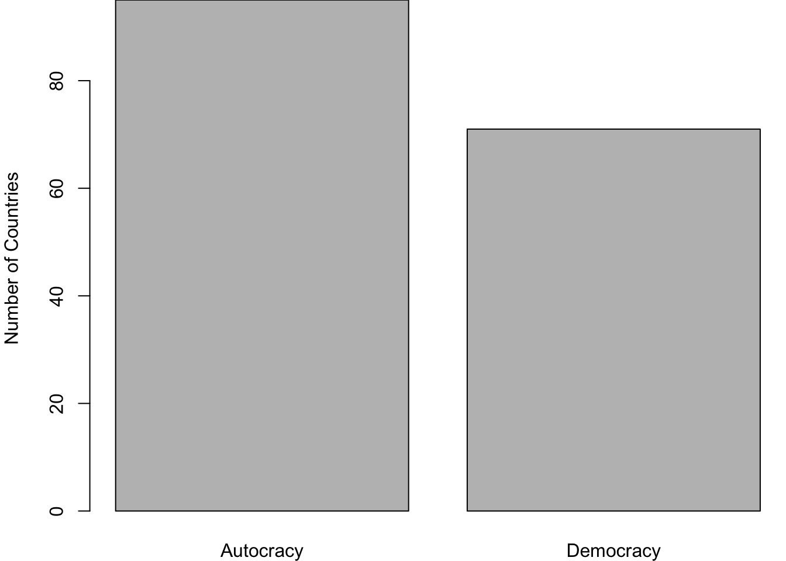
Figure 6.1: The number of countries by regime type
6.2.1 Moving from raw frequencies to percentages
In Figure 6.1, we have visualized the number of countries, which refers to raw frequencies. In some instances, we may want to present percentages instead. We can quickly calculate and present them.
All we need to do is to use table() function in conjunction with squared-parenthesis notation.
# raw frequencies:table(df$regime_type)
Autocracy Democracy
95 71
# the number of democraciestable(df$regime_type)[2]
Democracy
71
# the number of all countriessum(table(df$regime_type))
[1] 166
The number of democracies divided by the number of all countries will give use the proportion of democracies.
This is the rate of democracies, but there are too many decimal points. Just two decimal points would be enough. Also, let’s present it in terms of percentages. Multiplying this figure by a 100 and rounding it to decimal points would us what we want: percentage points.
Let’s do a quality check: these two numbers should add up roughly to 100.
sum(regime_perc)
[1] 100
Now, we can do a barplot using percentages.
barplot(regime_perc)
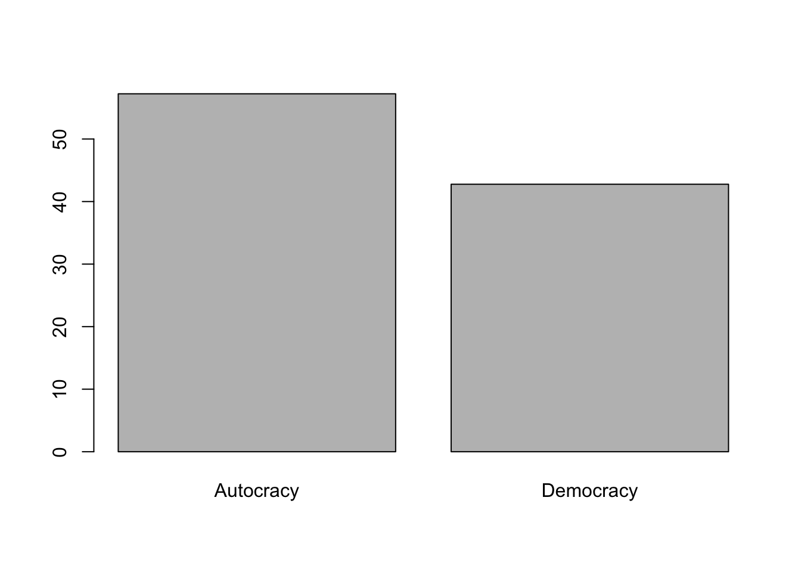
Let’s try to make it prettier.
barplot(regime_perc,ylim =c(0, 60), # y-axis limits (coverage is from 0 to 60 )ylab ="Percentage of Countries",main ="Distribution of Regime Type in 2010" )
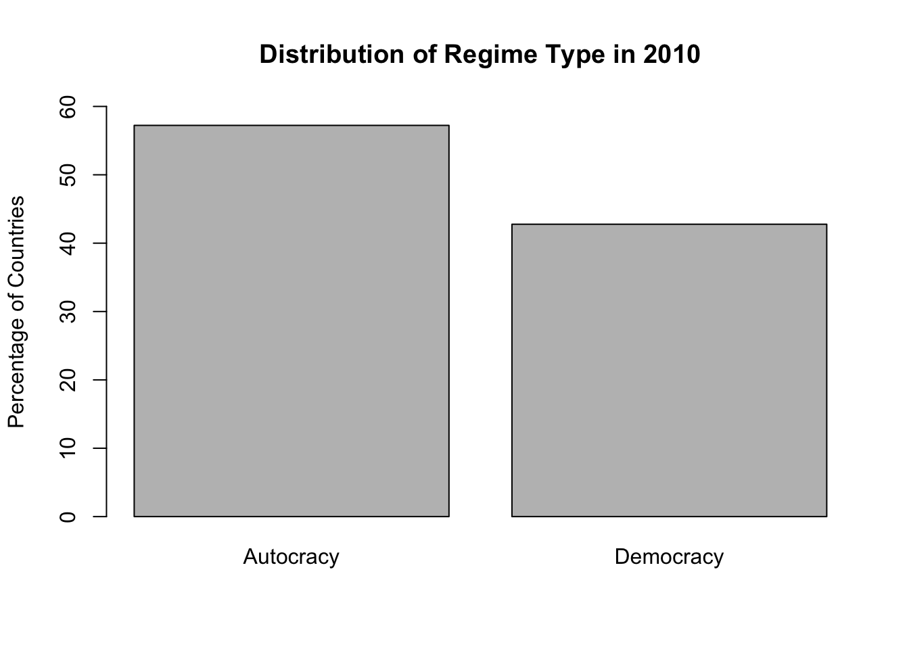
Figure 6.2: Percentage of autocracies and democracies across the world
Figure 6.2 looks nice. We can present such a nice graph in our reports.
6.3 Explanatory variable: natural resource production
Next, let’s move to our explanatory variable: natural resource production (Natural_resources_rents_perc_of_GDP). This variable gives us the share of natural resources in a country’s economic output. Again, I will start with a quick summary.
summary(df$Natural_resources_rents_perc_of_GDP)
Min. 1st Qu. Median Mean 3rd Qu. Max. NA's
0.000 1.015 3.815 9.043 12.000 53.660 4
This variable measures the share in terms of percentage, which means it should be between 0 and 100. As we expected, all the numbers are between 0 and 100. the maximum is 52.660 and the minimum is 0. There are no weird figures such as below 0 or above 100. However, we should be careful. There are 4 missing values.
Let’s check the countries with the missing data.
# Give me the country name such that natural resource variable is not availabledf$Country_Name[ is.na(df$Natural_resources_rents_perc_of_GDP)]
What about the top 10 countries that are most dependent on natural resources?
# find the countries that are most dependent on natural resources (top 10)df |>select(Country_Name, Natural_resources_rents_perc_of_GDP) |># selects only two variablesarrange(desc(Natural_resources_rents_perc_of_GDP)) |># arranges (sorts) from highest to lowesthead(n =10) # select only the first 10 rows
I am not going to check the lowest because there are many countries that do not produce any natural resources. This part is not interesting.
Let’s visually summarize the variable. Starting with a histogram.
hist(df$Natural_resources_rents_perc_of_GDP,main ="Natural resources as the % of GDP", xlab ="Percentage of GDP" )
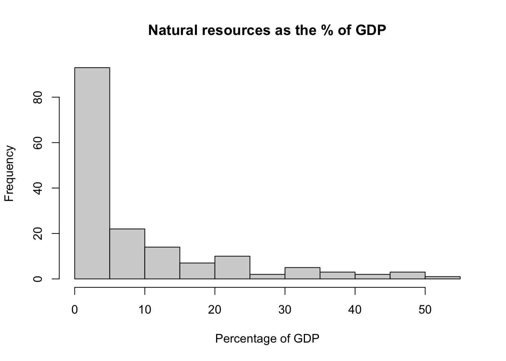
We can also produce a box plot.
boxplot(df$Natural_resources_rents_perc_of_GDP,main ="Natural resources as the % of GDP", ylab ="Percentage of GDP" )
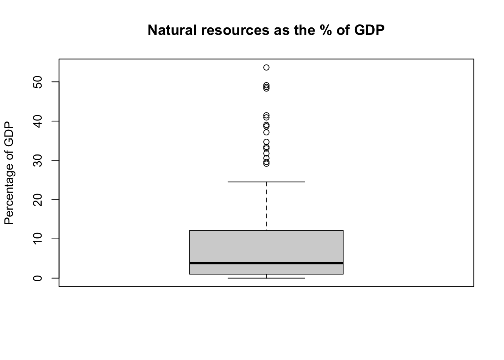
Again, Natural_resources_rents_perc_of_GDP is a numerical variable, but we can create a categorical variable using it. This will allow us to do a cross tabulation.
6.4 Whether a country is a major natural resource producer or not
We need to decide a cut-point to categorize countries according to whether they are a major natural resource producer or not. I suggest 5% because it is a nice round number. Looking at the data, it is also higher than the median.
We have two categories:
A country is considered a major natural resource producer if natural resource production accounts for 5% or more of its GDP.
A country is not considered a major natural resource producer if natural resource production accounts for less than 5% of its GDP.
# There is no variable categorizing a country as a major natural resource producer or not# We need to create this# let's decide a threshold: 5 percent or over of the GDP"df$nat_res <-NAdf$nat_res[df$Natural_resources_rents_perc_of_GDP >=5] <-"Major Producer"df$nat_res[df$Natural_resources_rents_perc_of_GDP <5] <-"Not Major Producer"
Let’s see a frequency table.
# table of the new variable (also show missing)table(df$nat_res, useNA ="always")
Major Producer Not Major Producer <NA>
69 93 4
Let’s do a quality control check if you wish.
# check if categorization is correct:# are countries below %5 coded not major producer?# are countries above %5 coded major producer?table(df$Natural_resources_rents_perc_of_GDP, df$nat_res)
6.5 Cross tabulate regime_type and nat_res
We reached to the stage that we can cross-tabulate to assess the relationship between natural resources and regime type. We will get closer to producing Table 6.1.
Important: The order is important
The order is important for reporting which percentages (row or column) are displayed. Traditionally, horizontal axis (x-axis) is reserved for the independent variable whereas the vertical axis (y-axis) is for the dependent variable. Horizontal property refers to rows in a cross tabulation. The dependent variable should go to columns.
# cross tabulate:# first variable is for rows: explanatory variable# second variable is for column: outcome variabletable(df$nat_res, df$regime_type)
Autocracy Democracy
Major Producer 55 14
Not Major Producer 37 56
We have produced the raw frequencies! Next, we need to calculate respective percentages.
We have two questions:
What is the proportion of democracies among the countries that are major natural resource producers?
What is the proportion of democracies among the countries that are not major natural resource producers?
If the proportion of democracy is much lower among the countries that are major natural resource producers than the countries that are not major resource producers, then there is a relationship in the direction of what the resource curse theory expects.
There are \(55 + 14 = 69\) major resource producers. Only \(14 / 69 = 0.20\) of them are democracies whereas \(0.80\) of them are autocracies.
Let’s ask R to calculate it for us.
# Major resource producers are the first rowtable(df$nat_res, df$regime_type)[1, ]
Autocracy Democracy
55 14
# sum of the first row is the number of natural resource producerssum(table(df$nat_res, df$regime_type)[1, ])
[1] 69
# respective proportions of regime type for natural resource producerstable(df$nat_res, df$regime_type)[1, ] /sum(table(df$nat_res, df$regime_type)[1, ])
Autocracy Democracy
0.7971014 0.2028986
# Let's keep this in an object:natres_yes <-table(df$nat_res, df$regime_type)[1, ] /sum(table(df$nat_res, df$regime_type)[1, ])# multiply it with 100 to make it percentagesnatres_yes <- natres_yes *100# round it to two decimal pointsnatres_yes <-round(natres_yes, 2)# see the outputnatres_yes
Autocracy Democracy
79.71 20.29
# sum of the two should be ~100sum(natres_yes)
[1] 100
Next, we will do the same for countries that are not major natural resource producers.
# Not major resource producers are the second rowtable(df$nat_res, df$regime_type)[2, ]
Autocracy Democracy
37 56
# sum of the second row is the number of countries that are not major resource producerssum(table(df$nat_res, df$regime_type)[2, ])
[1] 93
# respective proportions of regime type for not natural resource producerstable(df$nat_res, df$regime_type)[2, ] /sum(table(df$nat_res, df$regime_type)[2, ])
Autocracy Democracy
0.3978495 0.6021505
# Let's keep this in an object:natres_no <-table(df$nat_res, df$regime_type)[2, ] /sum(table(df$nat_res, df$regime_type)[2, ])# multiply it with 100 to make it percentagesnatres_no <- natres_no *100# round it to two decimal pointsnatres_no <-round(natres_no, 2)# see the outputnatres_no
Autocracy Democracy
39.78 60.22
# sum of the two should be ~100sum(natres_no)
[1] 100
# Put the two together:tbl_percentages <-rbind(natres_yes, natres_no)tbl_percentages
The rate of democracy is much lower (20.29%) among major natural resource producers compared to countries that are not major resource producers (60.22% of them are democracies).
6.5.1 A shortcut for calculating percentages
We calculated the respective percentages through bit by bit. This is a good way of learning. There are also shortcuts to carry out the same calculations. For example, prop.table() function is useful to calculate proportions in a table.
Let’s start playing with prop.table().
# table for natural resources and regime typetbl_nr <-table(df$nat_res, df$regime_type)# see the tabletbl_nr
Autocracy Democracy
Major Producer 55 14
Not Major Producer 37 56
# prop.table() gives the cell proportions (when the margin is left undefined)prop.table(tbl_nr)
Autocracy Democracy
Major Producer 0.33950617 0.08641975
Not Major Producer 0.22839506 0.34567901
# summation of these proportions
We have produced cell proportions, but this is not we want to report. We want to calculate row proportions (turn these into percentages and report them). We will use the margin option.
# prop.table() gives the cell proportions (when the margin is left undefined)prop.table(tbl_nr, margin =1) # margin 1 refers to rows
Autocracy Democracy
Major Producer 0.7971014 0.2028986
Not Major Producer 0.3978495 0.6021505
# Percentagesprop.table(tbl_nr, margin =1) *100
Autocracy Democracy
Major Producer 79.71014 20.28986
Not Major Producer 39.78495 60.21505
Autocracy Democracy
Major Producer 79.71 20.29
Not Major Producer 39.78 60.22
# keep them in an objecttbl_nr_prc <-round(prop.table(tbl_nr, margin =1) *100, 2)
6.5.2 Visualization
Creating a stacked bar graph is a good way of visualizing the correlation between regime type and natural resources.
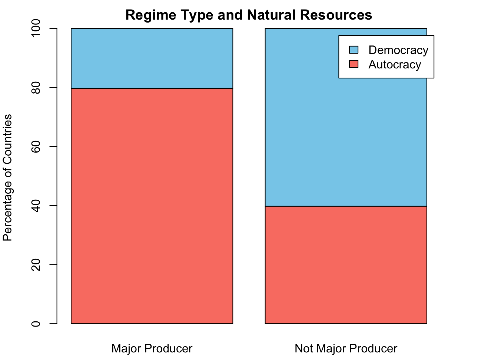
Figure 6.3: The number of countries by regime type
Let’s break this apart one by one. First, the category on the x-axis is whether a country is a major natural resource producer or not. Second, the category shown by the stacked bars (color shading) refers to regime type. The two top bar chunks (in sky blue) represents democracy and the two lower bar chunks (in salmon red) are for autocracy.
Let’s try to generate this. What if we plug in a barplot() to our table?
# barplot function directly takes the table tbl_nr_prc as input:barplot(tbl_nr_prc)
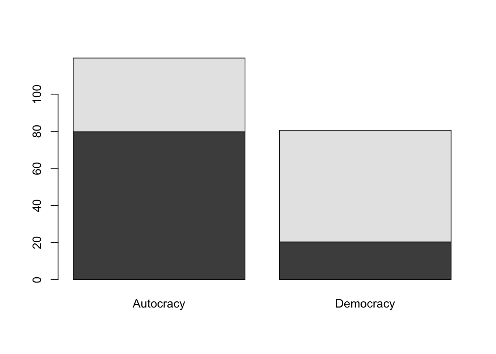
Ok, this is a start, but we are a little bit off. Most notably, x-axis categories refer to regime type. This needs to be swapped. Also, bars go higher than 100%, which is weird. This is because barplot() is stacking column wise, but our input is row wise. To swap it, we can simply use a transpose function: t(). This will swap the rows and columns.
# swapping rows and columns: let's see if it is workingt(tbl_nr_prc)
Major Producer Not Major Producer
Autocracy 79.71 39.78
Democracy 20.29 60.22
# yes it is working!# feed this into barplotbarplot(t(tbl_nr_prc))
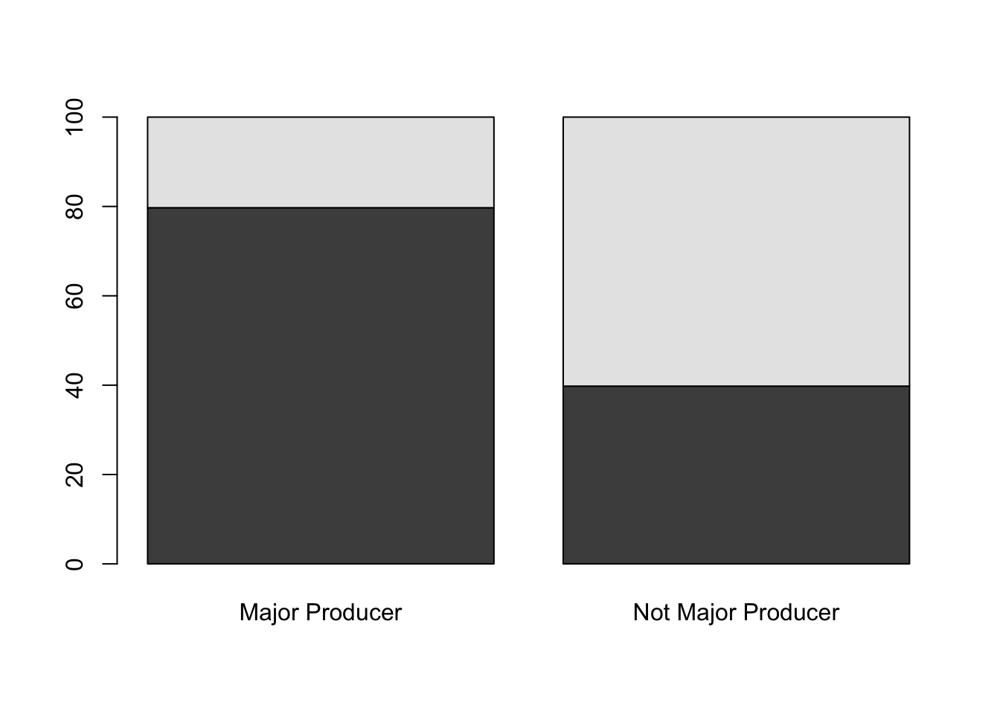
We have created the substantive part. Next, add the legend.
barplot(t(tbl_nr_prc),main ="Regime Type and Natural Resources",ylab ="Percentage of Countries",legend.text =colnames(tbl_nr_prc) )
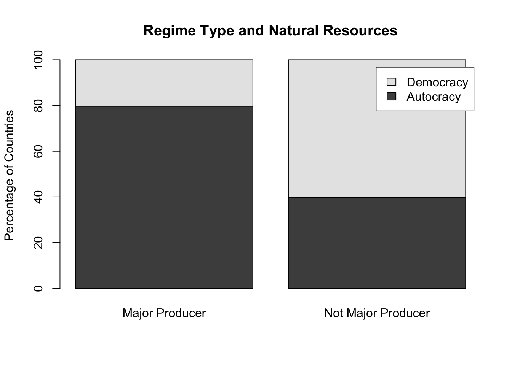
You could also change the colors if you like. We have already covered how to do this.
When reporting, do not forget to put figure captions and numbers (see Figure 6.3).
How to write it out?
# writing this graph into a .png filepng("stacked.png", res =300, units ="cm", width =12, height =16)barplot(t(tbl_nr_prc),main ="Regime Type and Natural Resources",ylab ="Percentage of Countries",legend.text =colnames(tbl_nr_prc) )dev.off()
6.6 Task: Natural Resources and Civil Conflict
This is a challenge for you: assess the relationship between natural resources and civil conflict. The resource curse theory also posits that countries that rely heavily on natural resource production are vulnerable to internal armed conflict. \[ Natural \; resources \rightarrow Civil \; Conflict \]
Take a look at the CivilConflict variable. It has three categories: civil war; minor civil conflict; no conflict. Using CivilConflict and nat_res, answer the questions below.
Is there a relationship between natural resources and civil conflict?
Cross tabulate CivilConflict and nat_res.
For major natural resource producers, report the percentage of countries that are peaceful, in civil war, or facing minor conflict.
For countries that are not major natural resource producers, report the percentages for respective conflict categories.
Comparing these percentages, make a decision: is there a relationship between natural resources and civil conflict?
Using CivilConflict variable, create a new binary variable called conflict_bin, which indicates whether a country is peaceful or in conflict. Repeat the question #1 for this conflict_bin variable.